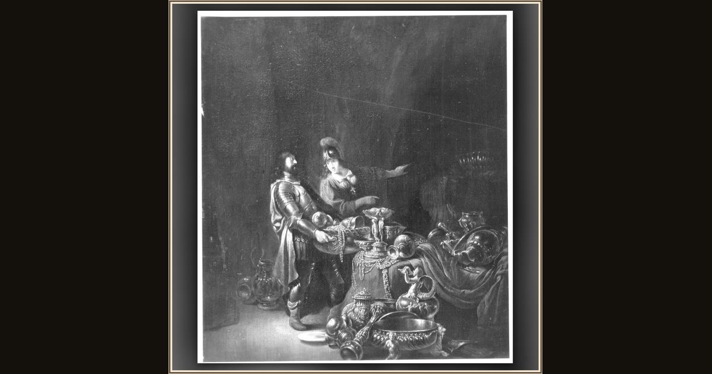

Odysseus and Athena Hiding the Trojan Spoils
Willem de Poorter · 17th century · Alte Pinakothek · Munich, Germany
In a shadowy cave on Ithaca, Athena helps Odysseus tuck away the Phaeacians' treasure — hidden safe before his hardest adventure begins. Explore its place in Book XIII of the Odyssey.